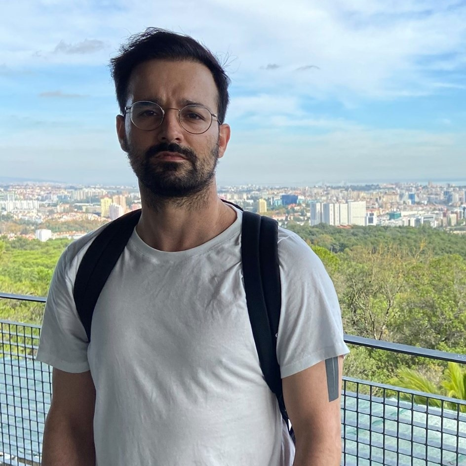

I'm a software engineer currently working as an independent contractor. I work mainly with javascript and clojure.
After a university degree in mechanical engineering with a strong focus in energy and fluid computational analysis, I worked at a university lab doing fluid flow analysis for external clients for a couple of years.
Around 2013 I left the lab and eventually worked for a couple of startups in the booming Lisbon startup scene.
In 2015, I moved to London and worked for E-commerce, entertainment and financial services, leaving in 2020 after getting a remote job.
In 2016, I created a personal project using open driving licence pass rates, that contributed to better transparency in an otherwise opaque sector of the Portuguese economy.
Currently I'm focused primarily in distributed systems and numerical problems.
Outside of work, I've grappled in Brazilian Jiu-Jitsu on and off for about a decade, having attended 3 competitions in London, winning a 2nd place in one of them. After a 10 day meditation retreat in 2018, I've been a regular meditator and I've recently joined London's branch of the Great Debaters Club.
You can check my cv here. If you want to get in touch please email me at mail@fjsousa.com.

What I've been up to these past years:
Highlighted projects
- GPU based forest fire simulation and algorithm optimization, 2010. Still available on github
- Game development prototyping in C++ and Construct for what would latter become a children's educational game: Zuper in Space, 2010
- Open driving license pass rates, 2016
- At youview (2019), I've charged the early consolidation efforts of a set of microservices, into more maintainable smaller services with considerable AWS budget savings
White papers
- Simulation of surface fire fronts using firelib and GPUs, 2011
- Faster than real time stochastic fire spread simulations, 2011
- Numerical Investigations on the Inter-Career-Gap Flow for a Generic High Speed Train, 2011
Organizations I belonged to
- Lasef - Fluid and Energy simulation lab (January 2010 - November 2012)
- Great Debators Club, London 2020
Companies I've worked for
- Crowdprocess, Lisbon 2013 (no longer active)
- Muzzley, Lisbon 2014 (no longer active)
- Style.com, London 2015 (no longer active)
- Funding Circle, London 2017 (IPO 2018)
- Youview, London 2018
Awards
- 2nd place in the Msc. Category of the Fraunhofer Challenge with a fire simulation app, 2011. The contest is an academic competition that awards research with practical utility
- ISCTE-IUL MIT Venture Competition – Semi-finalist, 2011. Contributed with fluid flow analysis of a high-altitude, floating wind turbine
Conferences
- Hack for Good, Lisbon 2014 (co-organiser)
- Geo Camp, 2014 Caldas da Rainha (Speaker)
- Pixels Camp, Lisbon 2016 (Speaker)
Continuous Learning
- Think Again: How to Reason and Argue (Coursera, 2016)
- Algorithms, part 1 (Coursera, 2017)
- Vipassana 10 day meditation retreat (Chennai India, 2018)
- Deep Learning Specialization (currently attending)
Other
Independent creators I support
- Jake Haranhan and Popular Front
- Sam Harris
- Bozhidar Batsov
Brazilian Jiu Jitsu
- Blue Belt in Brazilian Jiu-Jitsu, 2013
- Southeast Open, Jan 2018
- Brighton BJJ 24-7 Winter Open 2018: 2nd place
- Grappling Industries LONDON: March 14, 2020
3 books, 3 songs, 3 films
Books:
- Godel Escher Bach, Douglas Hofstadter
- Shadows of Forgotten Ancestors, Carl Sagan
- 1984, George Orwell
Songs:
- Echoes, Pink Floyd
- Schism, Tool
- 50 Million Year Trip, Kyuss
Films:
- The Matrix, The Wachowskis
- Memento, Christopher Nolan
- Fight Club, David Fincher